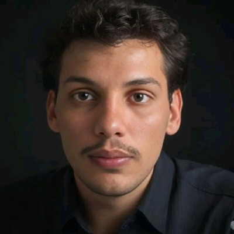

Líder de Dados e Automações · Eletrofrigor
3 anos na área de dados, hoje Líder de Dados e Automações na Eletrofrigor. Especializado em Python para automação e engenharia de dados, SQL, Power BI e integração de sistemas. Construo soluções end-to-end — da extração no ERP até dashboards e workflows que transformam dados em decisões. Pós-graduando em Engenharia de Dados pela PUC Minas.

Dashboard de Pipeline de Cotações
Análise do funil de cotações integrando tabelas TGFCAB, TGFITE e TGFCAB_EXC com status ABERTO, GANHO, EXCLUÍDO e CANCELADO. Taxa de conversão e prazo médio por carteira.
Indicadores Operacionais Semanais
Dashboard semanal com CTEs em Oracle SQL — movimentações, estoque em trânsito (loc. 51000000), garantias e devoluções, consolidado com TRUNC(DTNEG, 'IW') para semanas ISO.
Integração ERP → SharePoint via n8n
Workflow n8n que extrai dados do Sankhya via API e sincroniza com SharePoint Lists. Suporte a formato entity-based e row-based da resposta DbExplorerSP.
Sistema de Análise de Estoque
Extração paginada da API Sankhya (4.500 registros/página), sugestões de transferências entre empresas com regras de negócio, ranking por criticalidade e exportação Excel via openpyxl.
Sistema SAC com Power Automate
Formulários Microsoft Forms geram cards no Planner roteados por categoria (GARANTIA, DEVOLUÇÃO, RASTREIO), com notificações por e-mail e rastreamento de status via Power Automate.
Análise Semanal de Vendas
Power Query M com agrupamento por semanas segunda–domingo usando WEEKDAY, deduplicação de VLRNOTA por NUNOTA, métricas de recompra e clientes ativos por carteira.
3 anos na área de dados, hoje Líder de Dados e Automações na Eletrofrigor. Especializado em Python para automação e engenharia de dados, SQL, Power BI e integração de sistemas. Construo pipelines, dashboards e workflows end-to-end que transformam dados em decisões estratégicas. Pós-graduando em Engenharia de Dados pela PUC Minas.